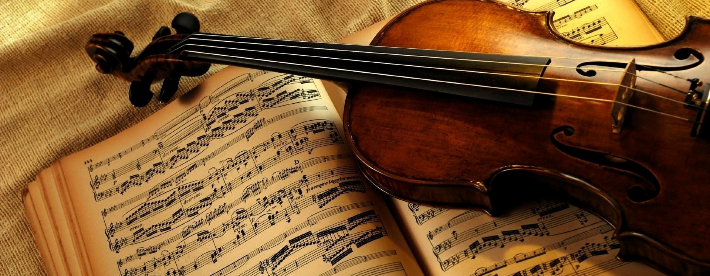

Violin

POPULARITY
The violin comes in at third on our list. While it is played a lot in classical music, it is an important part of several genres. It is fairly easy to learn and you can purchase different sizes, which makes this a great instrument for kids to start out wit
DIFICULTY LEVEL
a violin is the most difficult musical instrument to be master in. Some genius beginners seem to learn violin perfectly with just two to three years of practicing. But mostly it takes much longer to become a master violin player. Explore violin lessons Mississauga for you as a beginner.
TIME TO LEARN
If you would like to play the violin professionally, commitment to many years of hard work is essential. So, exactly how long does it take to learn violin? Well, the answer is entirely up to you. With a continuous and steady training schedule, you can make a lot of progress toward your goals in three to five years..
PRICE
Violin Price in India starts all the way from Rs. 3,000 and go all the way to Rs. 30,000. Depending upon whether you are a beginner, intermediate, or expert, the violin you pick can be different
The violin comes in at third on our list. While it is played a lot in classical music, it is an important part of several genres. It is fairly easy to learn and you can purchase different sizes, which makes this a great instrument for kids to start out wit
DIFICULTY LEVEL
a violin is the most difficult musical instrument to be master in. Some genius beginners seem to learn violin perfectly with just two to three years of practicing. But mostly it takes much longer to become a master violin player. Explore violin lessons Mississauga for you as a beginner.
TIME TO LEARN
If you would like to play the violin professionally, commitment to many years of hard work is essential. So, exactly how long does it take to learn violin? Well, the answer is entirely up to you. With a continuous and steady training schedule, you can make a lot of progress toward your goals in three to five years..
PRICE
Violin Price in India starts all the way from Rs. 3,000 and go all the way to Rs. 30,000. Depending upon whether you are a beginner, intermediate, or expert, the violin you pick can be different